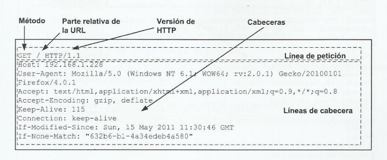
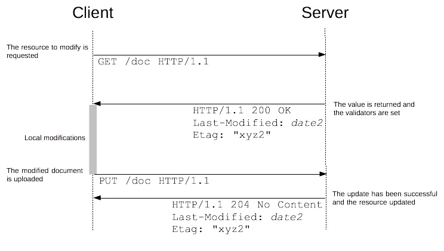
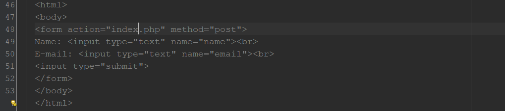
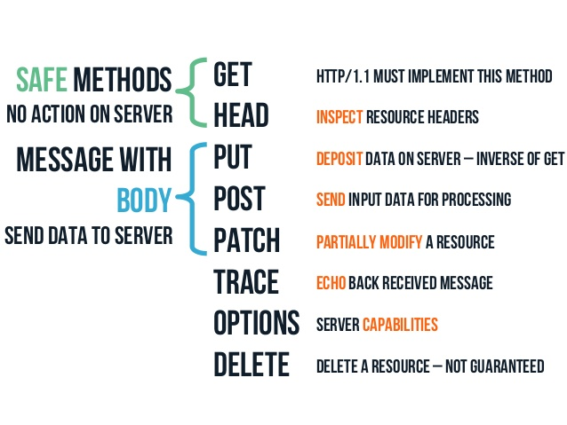
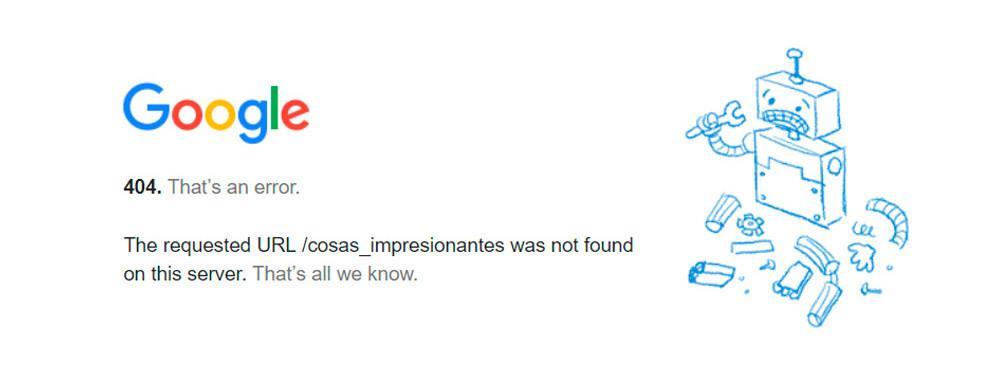

Un conjunto de métodos de petición para indicar la acción que se desea realizar
para un recurso determinado. Aunque estos también pueden ser sustantivos, estos
métodos de solicitud a veces son llamados HTTP verbs.

Petición GET
El método GET se utiliza para leer una representación de un recurso (Recuperar datos).
Esta es el metodo o la petición principal en HTTP.
Un ejemplo de peticion GET puede ser el siguiente como se muestra en la imagen, en este caso
"index.html" es la pagina de inicio de una pagina web.
El método GET tambien se puede utilizar en los form, donde se pueden agregar valores(values) a buscar en la URL
este método tambien permite añadir más información o parametros a la solicitud, la cual es procesada por el servidor, por ejemplo:
La secuencia de petición (query string) se inicia con un signo de interrogación “?”.
Todos los parámetros se componen de un nombre y un valor: “Nombre=Valor”.
Si se han de adjuntar varios parámetros, se unen con un signo “&”.

Petición POST
Cuando se tienen que enviar al servidor web paquetes grandes de datos, como imágenes o
datos de formulario de carácter privado, como se menciono anteriormente este método es indicado
para enviar distintos tipos de archivos o textos largos, funciones que la peteción GET no es capas de realizar.
El metodo POST se utiliza mediante los form, manejando la misma estructura que se demostro anteriomente con el método GET.

Petición PUT
Este método o petición es principalmente utilizado para realizar modificaciones o actualizaciones, este verbo al igual que DELETE y GET
son verbos "Idempotentes", lo cual significa que pueden realizar una misma acción varias veces y en todas obtener la misma respuesta
o estado el cual fue obtenido en la misma llamada.
Petición DELETE
En este caso y como su nombre lo indica esta petición se encarga de eliminar un recurso o bien sea un registro de la base de datos
esto depende del tipo de apliacion Web que se este manejando.
Generalidades

Códigos de estado HTTP
Los códigos de estado HTTP describen de forma abreviada la respuesta HTTP. Este protocolo clasifica los codigos o errores
en 5 categorias que son:
1. 1XX Respuestas informativas
2. 2XX Peticiones correctas
3. 3XX Redirecciones
4. 4XX Errores del cliente
5. 5XX Errores de servidor
1. 1XX Respuestas informativas
Este tipo de código de estado indica una respuesta provisional.
100 Continue. El servidor ha recibido los headers del request y el cliente debería proceder a enviar el cuerpo de la respuesta.
101 Switching Protocols. El requester ha solicitado al servidor conmutar protocolos.
102 Processing. Usado en requests para reanudar peticiones PUT o POST abortadas.
2. 2XX Peticiones correctas
Este código de estado indica que la acción solicitada por el cliente ha sido recibida, entendida, aceptada y procesada correctamente.
200 OK. El request es correcto.
201 Created. El request se ha completado y se ha creado un nuevo recurso.
202 Aceptada. El request se ha aceptado para procesarlo.
203 Non-Authoritative Information.
204 No Content. El request se ha procesado correctamente, pero no devuelve ningún contenido.
205 Reset Content. El request se ha procesado correctamente, pero no devuelve ningún contenido y se requiere que el requester recargue el contenido.
206 Partial Content. El servidor devuelve sólo parte del recurso debido a una limitación que ha configurado el cliente
207 Multi-Status. Puede contener un número de códigos de estado diferentes dependiendo del número de sub-requests.
3. 3XX Redirecciones
El cliente ha de tomar una acción adicional para completar el request..
300 Multiple Choices. Es una lista de enlaces.
301 Moved Permanently. La página solicitada se ha movido permanentemente a una nueva URI.
302 Found. La página solicitada se ha movido temporalmente a una nueva URI.
303 See Other. La página solicitada se puede encontrar en una URL diferente.
304 Not Modified. Indica que la página solicitada no se ha modificado desde la última petición.
305 Use Proxy (desde HTTP/1.1). El recurso solicitado sólo está disponible a través de proxy.
307 Temporary Redirect (desde HTTP/1.1). La página solicitada se ha movido temporalmente a otra URI. Al contrario que con la 302.
308 Permanent Redirect. El request y futuros requests deberían repetirse usando otro URI
4. 4XX Errores del cliente
El servidor debe incluir una entidad que contiene una explicación del error, y si es temporal o permanente.
400 Bad Request. El servidor no puede o no va a procesar el request.
401 Unauthorized, usa cuando se requiere una autentificación y ha fallado o todavía no se a facilitado.
402 Payment Required. La intención original fue para pago con tarjeta o micropago.
403 Forbidden. El request fue válido pero el servidor se niega a responder.
404 Not Found. El recurso del request no se ha podido encontrar.
405 Method Not Allowed. Se ha hecho un request con un recurso usando un método request no soportado
406 Not Acceptable. El recurso solicitado solo genera contenido no aceptado de acuerdo con los headers Accept
407 Proxy Authentication. El cliente se debe identificar primero con el proxy
408 Request Timeout.
409 Conflict. Conflicto en el request, como cuando se actualizan al mismo tiempo dos recursos.
410 Gone. El recurso solicitado no está disponible ni lo estará en el futuro.
411 Length Required. El request no especificó la longitud del contenido, la cual es requerida por el recurso solicitado.
412 Precondition Failed. El servidor no cumple una de las precondiciones.
413 Request Entity Too Large. El request es más largo que el que está dispuesto a aceptar el servidor.
414 Request-URI Too Long. El URI es muy largo para que el servidor lo procese.
415 Unsupported Media Type. La entidad request tiene un media type que el servidor o recurso no soportan.
416 Requested Range Not Satisfiable. El cliente ha solicitado una porción de archivo, pero el servidor no puede ofrecer esa porción.
417 Expectation Failed. El servidor no puede cumplir los requerimientos del header del request.

5. 5XX Errores del servidor
El servidor ha fallado al completar una solicitud aparentemente válida. Cuando los códigos de estado empiezan por 5 indica casos en los que el servidor sabe que tiene un error o realmente es incapaz de procesar el request.
500 Internal Server Error. Error genérico, cuando se ha dado una condición no esperada y no se puede concretar el mensaje.
501 Not Implemented. El servidor o no reconoce el método del request.
502 Bad Gateway. El server actuaba como puerta de entrada o proxy y recibió una respuesta inválida
503 Service Unavailable. El servidor está actualmente no disponible
504 Gateway Timeout. El servidor estaba actuando como puerta de entrada o proxy y no recibió una respuesta oportuna por parte del servidor.
505 HTTP Version Not Supported. El servidor no soporta la versión del protocolo HTTP usada en el request.